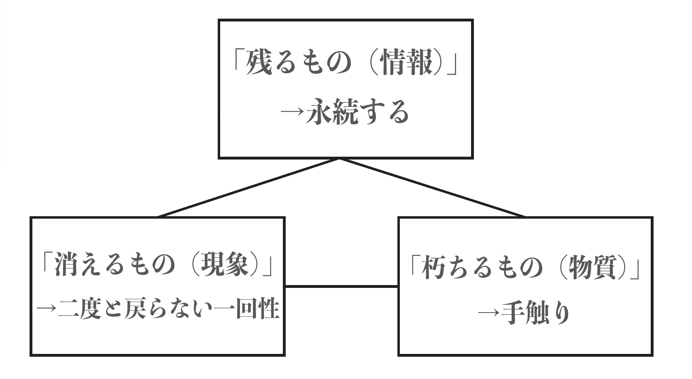

Vision / エモーション

メディア論とサウンド・アートを基盤に、現象（消えるもの）、物質（朽ちるもの）、情報（残るもの）という三つのメディアを横断し、エモーションの構造を探求する。
中心的な課題は、デジタルデータとして「残るもの」となった音に、「消えるもの」としての不可逆性と、「朽ちるもの」としての物質性をいかに再び与えるかである。
- 消えるもの（現象）：二度と同じ形では戻らないその不可逆性は、はかないノスタルジーを喚起する。
- 朽ちるもの（物質）：時間と共に変化し、やがては朽ちていくという、避けられない運命の中にノスタルジーを宿す。
- 残るもの（情報）：デジタル化された音源は劣化しないが、そこにはある種の空虚さが漂う。